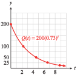

Section 7.5 Exponential Models
Subsection Doubling Time
Instead of giving the rate of growth of a population, we can specify its rate of growth by giving the time it takes for the population to double.
Example 7.81.
In 2005, the population of Egypt was 74 million and was growing by 2% per year.
- If it continues to grow at the same rate, how long will it take the population of Egypt to double?
- How long will it take the population to double again?
- Illustrate the results on a graph.
-
The population of Egypt is growing according to the formula
\begin{equation*} P(t) = 74(1.02)^t \end{equation*}where \(t\) is in years and \(P(t)\) is in millions. We would like to know when the population will reach 148 million (twice 74 million), so we solve the equation
\begin{align*} 74(1.02)^t \amp= 148\amp\amp \glert{\text{Divide both sides by }74.}\\ 1.02^t \amp= 2\amp\amp \glert{\text{Take the log of both sides.}}\\ t \log 1.02 \amp= \log 2\amp\amp \glert{\text{Divide both sides by log 1.02.}}\\ t \amp= \frac{\log 2}{\log 1.02} \approx 35 \text{ years} \end{align*}It will take the population about 35 years to double.
-
Twice 148 million is 296 million, so we solve the equation
\begin{align*} 148(1.02)^t \amp= 296\amp\amp \glert{\text{Divide both sides by }148.}\\ 1.02^t \amp= 2\amp\amp \glert{\text{Take the log of both sides.}}\\ t \log 1.02 \amp= \log 2\amp\amp \glert{\text{Divide both sides by log 1.02.}}\\ t \amp= \frac{\log 2}{\log 1.02} \approx 35 \text{ years} \end{align*}It will take the population about 35 years to double again.
-
A graph of \(P(t) = 74(1.02)^t\) is shown below. Note that the population doubles every 35 years.

In Example 1, notice that the calculations in parts (a) and (b) are identical after the first step, and give the same result, 35 years. In fact, we can start at any time, and it will take the population 35 years to double. We say that 35 years is the doubling time for this population. Every increasing exponential function has a constant doubling time. In fact, if a function has a constant doubling time, it must be exponential.
Notebook 7.82. Practice 1.
Notebook 7.83. QuickCheck 1.
If we know the doubling time for a population, we can immediately write down its growth law. Because the population of Egypt doubles in 35 years, we can write
In this form, the growth factor for the population is \(2^{1/35}\text{,}\) and you can check that, to five decimal places, \(2^{1/35} = 1.02\text{.}\)
Doubling Time.
If \(D\) is the doubling time for an exponential function \(P(t)\text{,}\) then
So, from knowing the doubling time, we can easily find the growth rate of a population.
Example 7.84.
At its current rate of growth, the population of the United States will double in 115.87 years.
- Write a formula for the population of the United States as a function of time.
- What is the annual percent growth rate of the population?
- The current population of the United States is not given, so we represent it by \(P_0\text{.}\) With \(t\) expressed in years, the formula is then\begin{equation*} P(t) = P_0 2^{t/115.87} \end{equation*}
- We write \(2^{t/115.87}\) in the form \(\left(2^{1/115.87}\right)^t\) to see that the growth factor is \(b = 2^{1/115.87}\text{,}\) or 1.006. For exponential growth, \(b = 1 + r\text{,}\) so \(r = 0.006\text{,}\) or 0.6%.
Notebook 7.85. Practice 2.
Subsection Half-Life
The half-life of a decreasing exponential function is the time it takes for the output to decrease to half its original value. For example, the half-life of a radioactive isotope is the time it takes for half of the substance to decay. The half-life of a drug is the time it takes for half of the drug to be eliminated from the body. Like the doubling time, the half-life is constant for a particular function; no matter where you start, it takes the same amount of time to reach half that value.
Example 7.86.
If you take \(200\) mg of ibuprofen to relieve sore muscles, the amount of the drug left in your body after \(t\) hours is \(Q(t) = 200(0.73)^t\text{.}\)
- What is the half-life of ibuprofen?
- When will 50 mg of ibuprofen remain in your body?
- Use the half-life to sketch a graph of \(Q(t)\text{.}\)
- To find the half-life, we calculate the time elapsed when only half the original amount, or 100 mg, is left.\begin{align*} 200(0.73)^t \amp = 100\amp\amp \glert{\text{Divide both sides by 200.}}\\ 0.73^t \amp = 0.5\amp\amp \glert{\text{Take the log of both sides.}}\\ t\log 0.73 \amp = \log 0.5\amp\amp \glert{\text{Divide both sides by log 0.73.}}\\ t \amp= \frac{\log 0.5}{\log 0.73} = 2.2 \end{align*}The half-life is 2.2> hours.
- After 2.2 hours, 100 mg of ibuprofen is left in the body. After another 2.2 hours, half of that amount, or 50 mg, is left. Thus, 50 mg remain after 4.4 hours.
-
We locate multiples of 2.2 hours on the horizontal axis. After each interval of 2.2 hours, the amount of ibuprofen is reduced to half its previous value. The graph is shown below.
\(t\) \(0\) \(2.2\) \(4.4\) \(6.6\) \(8.8\) \(Q(t)\) \(200\) \(100\) \(50\) \(25\) \(12.5\)
Notebook 7.87. Practice 3.
Notebook 7.88. QuickCheck 2.
Just as we can write an exponential growth law in terms of its doubling time, we can use the half-life to write a formula for exponential decay. For example, the half-life of ibuprofen is 2.2 hours, so every 2.2 hours the amount remaining is reduced by a factor of 0.5. After \(t\) hours a 200-mg dose will be reduced to
Once again, you can check that this formula is equivalent to the decay function given in Example 3.
Half-Life.
If \(H\) is the half-life for an exponential function \(Q(t)\text{,}\) then
Radioactive isotopes are molecules that decay into more stable molecules, emitting radiation in the process. Although radiation in large doses is harmful to living things, radioactive isotopes are useful as tracers in medicine and industry, and as treatment against cancer. The decay laws for radioactive isotopes are often given in terms of their half-lives.
Example 7.89.
Cobalt-60 is used in cold pasteurization to sterilize certain types of food. Gamma rays emitted by the isotope during radioactive decay kill any bacteria present without damaging the food. The half-life of cobalt-60 is 5.27 years.
- Write a decay law for cobalt-60.
- What is the annual decay rate for cobalt-60?
- We let \(Q(t)\) denote the amount of cobalt-60 left after \(t\) years, and let \(Q_0\) denote the initial amount. Every 5.27 years, \(Q(t)\) is reduced by a factor of 0.5, so\begin{equation*} Q(t) = Q_0 (0.5)^{t/5.27} \end{equation*}
- We rewrite the decay law in the form \(Q(t) = Q_0 (1 - r )^t\) as follows:\begin{equation*} Q(t) = Q_0 (0.5)^{t/5.27}=Q_0 \left((0.5)^{1/5.27}\right)^t = Q_0 (0.8768)^t \end{equation*}Thus, \(1 - r = 0.8768\text{,}\) so \(r = 0.1232\text{,}\) or 12.32%.
Notebook 7.90. Practice 4.
Notebook 7.91. QuickCheck 3.
Exercises Problem Set 7.5
Warm Up
For Problems 1-4, solve. Round your answers to hundredths.
1.
\(4.6(x-3)^{1.8}+12=18\)2.
\(2x^2-4.7x=3.8\)3.
\(0.6 \log (x-0.01) = -1.5\)4.
\(28(1.65)^{-0.3t} = 2.53\)Skills Practice
For Problems 5-8, write a growth or decay formula for the exponential function. Then find the percent growth or decay rate.
5.
A population starts with 2000 and has a doubling time of 5 years.
6.
You have 10 grams of a radioactive isotope whose half-life is 42 years.
7.
A certain medication has a half-life of 18 hours in the body. You are given an initial dose of \(D_0\) mg.
8.
The doubling time of a certain financial investment is 8 years. You invest an amount \(M_0\text{.}\)
Applications
9.
In 1798, the English political economist Thomas R. Malthus claimed that human populations, unchecked by environmental or social constraints, double every \(25\) years, regardless of the initial population size.
Write a growth law for human populations under these conditions.
What is the growth rate in unconstrained conditions?
10.
David Sifry observed in 2005 that over the previous two years, the number of Weblogs, or blogs, was doubling every 5 months. (Source: www.sifry.com/alerts/archives)
Write a formula for the number of blogs \(t\) years after January 2005, assuming it continues to grow at the same rate.
What is the growth rate for the number of blogs?
11.
Radioactive potassium-42, which is used by cardiologists as a tracer, decays at a rate of 5.4% per hour.
Find the half-life of potassium-42.
How long will it take for three-fourths of the sample to decay? For seven-eighths of the sample?
Suppose you start with 400 milligrams of potassium-42. Using your answers to (a) and (b), make a rough sketch of the decay function.
12.
Caffeine leaves the body at a rate of 15.6% each hour. Your first cup of coffee in the morning has 100 mg of caffeine.
How long will it take before you have 50 mg of that caffeine in your body?
How long will it take before you have 25 mg of that caffeine in your body?
Using your answers to (a) and (b), make a rough sketch of the decay function.
13.
Dichloro-diphenyl-trichloroethane (DDT) is a pesticide that was used in the middle decades of the twentieth century to control malaria. After 1945, it was also widely used on crops in the United States, and as much as one ton might be sprayed on a single cotton field. However, after the toxic effects of DDT on the environment began to appear, the chemical was banned in 1972.
A common estimate for the half-life of DDT in the soil is 15 years. Write a decay law for DDT in the soil.
In 1970, many soil samples in the United States contained about 0.5 mg of DDT per kg of soil. The NOAA (National Oceanic and Atmospheric Administration) safe level for DDT in the soil is 0.008 mg/kg. When will DDT content in the soil be reduced to a safe level?
14.
In 1986, the inflation rate in Bolivia was 8000% annually. The unit of currency in Bolivia is the boliviano.
Write a formula for the price of an item as a function of time. Let \(P_0\) be its initial price.
How long did it take for prices to double? Give both an exact value and a decimal approximation rounded to two decimal places.
Suppose \(P_0 = 5\) bolivianos. Graph your function in the window \(\text{Xmin} = 0\text{,}\) \(\text{Xmax} = 0.94\text{,}\) \(\text{Ymin} = 0\text{,}\) \(\text{Ymax} = 100\text{.}\)
Use intersect to verify that the price of the item doubles from 5 to 10 bolivianos, from 10 to 20, and from 20 to 40 in equal periods of time.
In Problems 15 and 16,
Write a decay law for the isotope.
Use the decay law to answer the question. (Round to the nearest ten years.)
15.
Carbon-14 occurs in living organisms with a fixed ratio to nonradioactive carbon-12. After a plant or animal dies, the carbon-14 decays into stable carbon with a halflife of 5730 years. When samples from the Shroud of Turin were analyzed in 1988, they were found to have 91.2% of their original carbon-14. How old were those samples in 1988?
16.
Rubidium-strontium radioactive dating is used in geologic studies to measure the age of minerals. Rubidium-87 decays into strontium-87 with a half-life of 48.8 billion years. Several meteors were found to have 93.7% of their original rubidium. How old are the meteors?
For Problems 17-20, use the following formula for compound interest. If \(P\) dollars is invested at an annual interest rate \(r\) (expressed as a decimal) compounded \(n\) times yearly, the amount \(A\) after \(t\) years is given by
17.
What rate of interest is required so that $1000 will yield $1900> after 5 years if the interest rate is compounded monthly?
18.
What rate of interest is required so that $400 will yield $600 after 3 years if the interest rate is compounded quarterly?
19.
How long will it take a sum of money to triple if it is invested at 10% compounded daily?
20.
How long will it take a sum of money to increase by a factor of 5 if it is invested at 10% compounded quarterly?